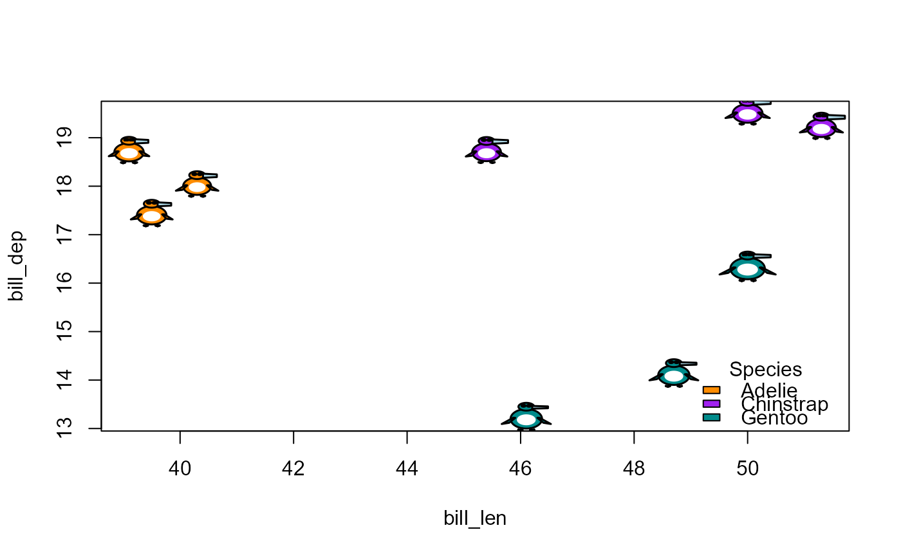

penguin_colors() gives the default body colors used for the penguin species.
penguin_legend() adds a legend for the species to a plot of penguin glyphs,
with colors matched to the species by name.
Usage
penguin_colors()
penguin_legend(
x = "topleft",
species,
col = penguin_colors(),
title = "Species",
bty = "n",
...
)Arguments
- x
Legend position, as in
graphics::legend(), e.g., "topleft" or "bottom"- species
Vector of the species shown in the plot. Only those present are included in the legend, in the order of the factor levels.
- col
Named vector of body colors, with species as names
- title
Legend title
- bty
Type of box drawn around the legend (default "n", for none)
- ...
Other arguments passed to
graphics::legend(), such ashorizandinset
Value
penguin_colors() returns a named character vector of colors.
penguin_legend() returns the result of graphics::legend(), invisibly.
Examples
penguin_colors()
#> Adelie Chinstrap Gentoo
#> "#FF6B35" "#9A78B8" "#73C05B"
# Use other colors, matched to species by name
data(penguins, package = "datasets")
my_colors <- c(Adelie = "darkorange", Chinstrap = "purple", Gentoo = "cyan4")
peng <- penguins[c(1:3, 153:155, 278:280), ]
plot(bill_dep ~ bill_len, data = peng, type = "n")
penguin_points(peng$bill_len, peng$bill_dep, peng, col = my_colors)
penguin_legend("bottomright", peng$species, col = my_colors)
